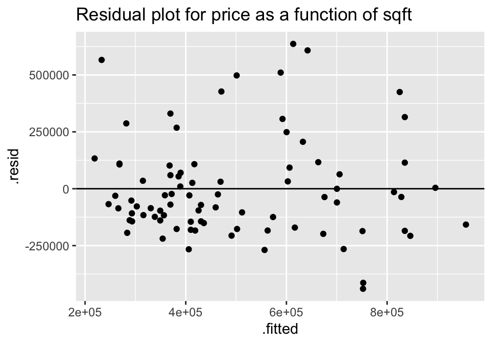

Chapter 6 Correlation & Regression
6.1 4/16/20 Agenda
- Definition of correlation (r)
- Interpretation of correlation (r)
- (Probably not: Inference on \(\rho\))
The last topic of the semester will focus on modeling and inference using two quantitative variables. That is, both the explanatory and the response variables are measured on a numeric scale.
To get started, consider a handful of variables taken on the top 80 PGA golfers in 2004. The example comes from Investigation 5.7 in Chance and Rossman (2018)

Figure 2.1: Investigation 5.7, Drive for show, putt for dough, Chance and Rossman (2018)
Rank the seven scatterplots from strongest negative to strongest positive. Some questions to ask yourself:
- What would the correlation be if there was a perfect positive relationship?
- What would the correlation be if there was a perfect negative relationship?
- What would the correlation be if there was no relationship?
6.2 Correlation
Correlation measures the association between two numerical variables. [Note, that when describing how two categorical (or one numerical & one categorical) variables vary together, they are said to be associated instead of correlated.]
The correlation coefficient measures the strength and direction of the linear association between two numerical variables.
6.2.1 Estimating Correlation
The value of the correlation is defined as:
\[\begin{eqnarray*} r &=& \frac{ \sum_i (x_i - \overline{x})(y_i - \overline{y})}{\sqrt{\sum_i(x_i - \overline{x})^2} \sqrt{ \sum_i(y_i - \overline{y})^2}}\\ r &=& \frac{1}{n-1} \sum_{i=1}^n \bigg(\frac{x_i - \overline{x}}{s_x} \bigg) \bigg(\frac{y_i - \overline{y}}{s_y} \bigg) \end{eqnarray*}\]

Figure 2.2: Scatterplots with average X and Y values superimposed. Investigation 5.7, Drive for show, putt for dough, Chance and Rossman (2018)
For each red dot (on each plot), consider the distance the observation is from the \(\overline{X}\) line and the \(\overline{Y}\) line. Is the observation (red dot) above both? below both? above one and below the other?
How does the particular red dot (observation) contribute to the correlation? In a positive way (to make \(r\) bigger)? In a negative way (to make \(r\) smaller)?
Some ideas worth thinking about:
- quadratic plots can have zero correlation yet a perfect functional relationship
- \(-1 \leq r \leq 1\)
- correlation does not imply causation (ice cream & boating accidents!)
- for inference with \(\rho\) as well as \(\beta_1\), the data should come from a bivariate normal distribution. That is, histograms of \(X\) and \(Y\) should both be normal, and the scatterplot should be a cloud.
- correlation will go down when only a narrow range of X values is represented (see denominator of r).
- measurement error biases the estimate of a correlation coefficient toward zero.
6.2.2 Coefficient of Determination – \(R^2\)
The coefficient of determination (\(R^2\)) is the square of the correlation (given above). However, it also has an additional interpretation that will be useful for us. It can measure how much of the original variability in Y is given by the regression line. Both SSE and least-squares will be defined below when we fit a line to the scatter plot of observations.
SSE is “sum of squared errors” (think about how \(s^2\) is defined). So, \(SSE(\overline{y})\) is the amount the response variable varies on its own. \(SSE(\mbox{least-squares})\) is the amount the response variable varies around the line.
\[\begin{eqnarray*} R^2 &=& \frac{SSE(\overline{y}) - SSE(\mbox{least-squares})}{SSE(\overline{y})} \\ &=& \frac{Var(y_i) - Var(e_i)}{Var(y_i)} \\ &=& 1 - \frac{Var(e_i)}{Var(y_i)}\\ \end{eqnarray*}\]
[The value \(e_i\) is discussed in detail below, but it is the distance from the observed response variable to the prediction on the line: $$e_i = y_i - _i.]$$
\(R^2\) can be used even in models with many explanatory variables. As such, the way to think about \(R^2\) is in terms of how much of the variability in the response variable was removed (when we learned the values of the explanatory variables). \(R^2\) is the proportion reduction in the variability of the response variable which is explained by the explanatory variable.
6.2.3 Inference for correlation
Note: we won’t actually cover inference for correlation in class, but the notes on inference for correlation are included so that you can see that the process is very similar to all of the other statistics seen in the course to this point.
Parameter: \(\rho\)
Statistic: \(r\)
SE\(_r: \sqrt{\frac{1-r^2}{n-2}}\)
BUT, \(r\) is only normally distributed when \(\rho\) = 0! Otherwise, the distribution of \(r\) from sample to sample is skewed (think about the scenario when \(\rho = 0.9\)).
6.2.3.1 Hypothesis Testing
\[\begin{eqnarray*} H_0:&& \rho = 0\\ H_A:&& \rho \ne 0\\ t^* &=& \frac{r}{SE_r} = \frac{r}{\sqrt{(1-r^2)/(n-2)}}\\ t^* &\sim& t_{n-2} \mbox{ when } H_0 \mbox{ is true} \end{eqnarray*}\]
6.2.3.2 Confidence Interval
If \(\rho \ne 0\), then the SE might be okay, but the sampling distribution of \(r\) will not be normal (and thus will not be a \(t\) when we use the SE).
Let:
\[\begin{eqnarray*} z &=& 0.5 \ln \bigg( \frac{1+r}{1-r} \bigg)\\ \xi &=& 0.5 \ln \bigg( \frac{1+\rho}{1-\rho} \bigg)\\ var(z) &=& \sqrt{\frac{1}{n-3}}\\ 95\% \mbox{ CI for } \xi : &&\\ z &\pm& 1.96 \cdot \sqrt{\frac{1}{n-3}}\\ \mbox{we're 95% confident that } && \\ &&z - 1.96 \cdot \sqrt{\frac{1}{n-3}} \leq \xi \leq z + 1.96 \cdot \sqrt{\frac{1}{n-3}}\\ && a \leq \xi \leq b\\ && a \leq 0.5 \ln \bigg(\frac{1+\rho}{1-\rho} \bigg) \leq b\\ && \frac{e^{2a} - 1}{e^{2a} + 1} \leq \rho \leq \frac{e^{2b} - 1}{e^{2b} + 1} \end{eqnarray*}\]
See the Cat Jumping22 example below in section 6.9.1.
HT:
\[\begin{eqnarray*}
H_0:&& \rho = 0\\
H_a:&& \rho \ne 0\\
t^* &=& \frac{r}{\sqrt{(1-r^2)/(n-2)}} = \frac{-0.496}{\sqrt{(1-0.496^2) / (18-2)}}= -2.2849\\
p-value &=& 2 \cdot P(t_{18-2} \leq -2.2849) = 2\cdot(pt(-2.2849,16)) = 0.036 \mbox{ (borderline significant)}
\end{eqnarray*}\]
CI:
\[\begin{eqnarray*}
95\% \mbox{CI for } \xi :&& \\
z \pm 1.96 \cdot \sqrt{\frac{1}{n-3}}&& \\
\mbox{we're } 95\% \mbox{ confident that}&&\\
0.5 \ln\bigg(\frac{1+r}{1-r}\bigg) - 1.96 \cdot \sqrt{\frac{1}{n-3}} &\leq \xi \leq& 0.5 \ln\bigg(\frac{1+r}{1-r}\bigg) + 1.96 \cdot \sqrt{\frac{1}{n-3}}\\
0.5 \ln\bigg(\frac{1 - 0.496}{1+0.496}\bigg) - 1.96 \cdot \sqrt{\frac{1}{18-3}} &\leq \xi \leq &0.5 \ln\bigg(\frac{1-0.496}{1+0.496}\bigg) + 1.96 \cdot \sqrt{\frac{1}{18-3}}\\
-1.05 &\leq \xi \leq &-0.04\\
\frac{e^{2\cdot -1.05} - 1}{e^{2\cdot -1.05} + 1} &\leq \rho \leq& \frac{e^{2\cdot -0.04} - 1}{e^{2\cdot -0.04} + 1}\\
&& (-0.781, -0.04)
\end{eqnarray*}\]
6.3 4/21/20 Agenda
- Least Squares estimation of the line
- Distribution of the least squares line from sample to sample
6.4 4/23/20 Agenda
- Inferential technical conditions
- Residual Plots
- Transformations
- Prediction Intervals
6.5 Simple Linear Regression
Regression is a method that predicts the value of one numerical variable from that of another. That is, as an extension to describing the degree of linearity of the relationship (correlation), the goal is now to create the best linear model – often for prediction. Note that many of the characteristics explored with correlation are applicable for regression. However, correlation treats \(X\) and \(Y\) as interchangeable, whereas regression treats \(X\) as fixed and known and \(Y\) as random and unknown. As we have previously, we call \(X\) the explanatory variable, and \(Y\) the response variable. Again, we do not assume that there is any causal mechanism between \(X\) and \(Y\) even if they have a strong linear (or otherwise) relationship.
Population Model
Notice the Greek letters representing parameters:
\[\begin{eqnarray*} E[y|x] &=& \beta_0 + \beta_1 x \\ y_i &=& \beta_0 + \beta_1 x_i + \epsilon_i\\ \epsilon_i &=& y_i - (\beta_0 + \beta_1 x_i)\\ \end{eqnarray*}\]
Predicted Values
The predicted values of Y from a regression line estimate the mean value of \(Y\) for all individuals that have a given value of \(X\). Notice the Roman letters (English letters) representing statistics:
\[\begin{eqnarray*} \hat{y} &=& b_0 + b_1 x\\ \hat{y}_i &=& b_0 + b_1 x_i\\ y_i &=& b_0 + b_1 x_i + e_i\\ e_i &=& y_i - \hat{y}_i = y_i - (b_0 + b_1 x_i)\\ \end{eqnarray*}\]
Notice, that we are predicting the mean value of the response variable at a given value of the explanatory variable!
6.5.1 Least Squares estimation of the regression line
To find the values of the regression statistics, the sum of squared errors is minimized.
SSE: Sum of squared errors (or residuals) is a measure of how closely the line fits to the points. SSE is the value of the squared deviations calculated at the “best” possible values of \(\beta_0\) and \(\beta_1\) for a given dataset.
\[\begin{eqnarray*} SSE = \sum_i (y_i - \hat{y}_i)^2 = \sum_i (y_i - (b_0 + b_1 x_i) )^2 \end{eqnarray*}\] is minimized by the values: \[\begin{eqnarray*} b_0 = \overline{y} - b_1 \overline{x} & \ \ \ \ \ \ \ & b_1 = r \frac{s_y}{s_x} \end{eqnarray*}\]
To find the “best” fitting line, we searched for the line that has the smallest residuals (SSE) in some sense. In particular, the goal is to try to find the line that minimizes the following quantity: \[Q=\sum e_i^2 = \sum (y_i-(b_0+b_1x_i))^2.\]
Finding \(b_0\) and \(b_1\) that minimize Q is a calculus problem. \[\frac{dQ}{db_0}=-2\sum (y_i-(b_0+b_1x_i)),\qquad \frac{dQ}{db_1}=-2\sum x_i(y_i-(b_0+b_1x_i))\] Setting both derivatives equal to 0 and solving for \(b_0\) and \(b_1\) yields the optimal values, denoted as \(b_0\) and \(b_1\)
One aspect of the optimization problem that is worth pointing out has to do with the role of the two variables of interest \(X\) and \(Y\). If we switch the roles of \(X\) and \(Y\), the best fitting line will be different. If the relationship was invariant to which variable we choose as a response, then switching the roles of \(X\) and \(Y\) should give a slope of \(1/b_1\), which is not the case. [Note that the role of \(X\) and \(Y\) is invariant when calculating the correlation but not when calculating the least squares regression line.]
Residuals
Residuals measure the scatter of points above and below the least squares regression line. We use the residuals in many of the calculations and interpretations of the model. Indeed, the goal of the linear regression is to find a model that has small residuals. That is, ideally, the known variable \(X\) will tell us all there is to know about the unknown variable \(Y\).
\[\begin{eqnarray*} e_i &=& (y_i - \hat{y}_i)\\ MSE&=& \frac{\sum_i (y_i - \hat{y}_i)^2}{n-2} = \frac{\sum_i (e_i)^2}{n-2} = s^2\\ SSE &=& \sum_i (y_i - \hat{y}_i)^2 = \sum_i (e_i)^2\\ R^2 &=& 1 - \frac{Var(e_i)}{Var(y_i)} \end{eqnarray*}\]
6.5.2 Inference on the slope, \(\beta_1\)
SE of the slope
\[\begin{eqnarray*} SE(b_1) &=& \sqrt{\frac{MSE}{\sum_i (x_i - \overline{x})^2}} = \sqrt{\frac{MSE}{(n-1)s_x^2}} = = \sqrt{\frac{\frac{\sum_i (y_i - \hat{y}_i)^2}{n-2}}{(n-1)s_x^2}}\\ \end{eqnarray*}\]
Just like any other statistic, the value of \(b_1\) can be calculated for every sample. The manner in which \(b_1\) varies from sample to sample becomes the sampling distribution of the sample slope. The SE of the slope will be the standard deviation associated with the sampling distribution of the slope. The resulting inference theory is very similar to that which we saw with the mean. The CLT describes \(b_1\) to have a normal distribution, and estimating the \(SE(b_1)\) induces extra variability which leads to a t-score test statistic with a t-distribution with df = \(n-2\).
\[\begin{eqnarray*} \mbox{t-score} = \frac{b_1 - \beta_1}{SE(b_1)} \sim t_{n-2} \end{eqnarray*}\]
CI for the slope
\[\begin{eqnarray*} b_1- t^*_{\alpha/2, n-2} SE(b_1) \leq \beta_1 \leq b_1 + t^*_{\alpha/2, n-2} SE(b_1) \end{eqnarray*}\]
See the Housing Prices23 example below in section 6.9.2.
\[\begin{eqnarray*} t_{\alpha/2,n-2} &=& qt(.975, 18-2) = 2.1199\\ SE(b_1) &=& 26.4\\ b_1 &=& 202\\ b_1 &\pm& t_{\alpha/2, n-2} SE(b_1): 202 \pm 2.1199 \cdot 26.4\\ && (146.03, 257.97)\\ \end{eqnarray*}\]
That is, we are 95% confident that the true average change in price associated with an additional square foot of house is between $146.03 and $257.97.
HT for the slope
As mentioned previously, \[\begin{eqnarray*} \mbox{t-score} = \frac{b_1 - \beta_1}{SE(b_1)} \sim t_{n-2} \end{eqnarray*}\]
Typically, interested is in testing whether or not the slope is zero. The null hypothesis of \(H_0: \beta_1 = 0\) addresses whether there is a non-zero linear relationship between \(X\) and \(Y\):
\[\begin{eqnarray*} H_0:&& \mbox{ the slope of the regression line is zero}, \beta_1=0\\ H_A:&& \mbox{ the slope of the regression line is not zero}, \beta_1 \ne 0\\ \end{eqnarray*}\]
As with previous tests, the alternative can be one- or two-sided (depending on the research question).
Again, back to the housing data… (consider a two sided test) \[\begin{eqnarray*} t^* &=& 7.67\\ p-value &=& 2 \cdot P(t_{16} \geq 7.67) = 2 \cdot (1-pt(7.67, 16)) \approx 0 \end{eqnarray*}\]
Regression Technical Conditions
- L: At each value of X, there is a population of possible Y-values whose mean lies on the “true” regression line (linearity)
- I: At each value of X, the Y-measurements represent a random sample from the population of possible Y-values (independence) [Consider this example of lack of independence. The researcher is trying to determine whether the number of pieces in a puzzle is linearly associated with the time to complete the puzzle. At first we choose 2 people and let them do 10 puzzles each. Then we let 20 independent people do the puzzles. The first experiment will create a slope which is particular to the two people sampled (it may or may not be close to the parameter). The second one will create a slope close to the 20 people sampled. Note that the effective variability of the first model is based on n=2, but we think it is based on n=20 (if we don’t notice the lack of independence). The second slope is based on n=20, and so it will have the correct associated variability.]
- N: At each value of X, the distribution of possible Y-values is normal (normality)
- E: The variance of Y-values is the same at all values of X (equal variance)
Residual Plots
Within a residual plot, you should be looking for the same types of things you want in a scatter plot. [See the residual plots provided in section 6.9.1.]
- a roughly symmetric cloud of points above and below the horizontal line at zero, with a higher density of points close to the line than far from the line,
- little noticeable curvature as we move from left to right along the X-axis, and
- approximately equal variance of points above and below the line at all values of X.
6.6 4/28/20 Agenda
- Multiple Linear Regression
6.7 4/30/20 Agenda
- Choosing model
- Residual Plots
- Prediction Intervals (harder to plot!)
6.8 Multiple Linear Regression
6.8.1 Model selection
6.8.2 Checking model assumptions
6.9 R code for regression
6.9.1 Example: Cat Jumping24 (Correlation & SLR)
Consider the cat data given in Investigations 5.6 and 5.13. The idea is to understand cat jumping velocity as a function of body characteristics. Note that the correlation \(r=-0.496\) between bodymass and velocity.
cats <- read_table2("http://www.rossmanchance.com/iscam2/data/CatJumping.txt")
ggplot(cats, aes(x=bodymass, y = velocity)) +
geom_point() +
geom_smooth(method = "lm", se=FALSE)
Correlation
## bodymass velocity
## bodymass 1.0000000 -0.4964022
## velocity -0.4964022 1.0000000Simple Linear Regression
##
## Call:
## lm(formula = velocity ~ bodymass, data = cats)
##
## Residuals:
## Min 1Q Median 3Q Max
## -48.069 -16.729 -8.524 10.546 84.625
##
## Coefficients:
## Estimate Std. Error t value Pr(>|t|)
## (Intercept) 394.473238 23.441939 16.828 1.35e-11 ***
## bodymass -0.012196 0.005332 -2.287 0.0361 *
## ---
## Signif. codes: 0 '***' 0.001 '**' 0.01 '*' 0.05 '.' 0.1 ' ' 1
##
## Residual standard error: 29.6 on 16 degrees of freedom
## Multiple R-squared: 0.2464, Adjusted R-squared: 0.1993
## F-statistic: 5.232 on 1 and 16 DF, p-value: 0.03613An alternative way to work with the output is in specific pieces (instead of the entire summary output).
## # A tibble: 2 x 7
## term estimate std.error statistic p.value conf.low conf.high
## <chr> <dbl> <dbl> <dbl> <dbl> <dbl> <dbl>
## 1 (Intercept) 394. 23.4 16.8 1.35e-11 345. 444.
## 2 bodymass -0.0122 0.00533 -2.29 3.61e- 2 -0.0235 -0.000893Residual Plot
And to work with the residuals, use augment().
## # A tibble: 18 x 9
## velocity bodymass .fitted .se.fit .resid .hat .sigma .cooksd
## <dbl> <dbl> <dbl> <dbl> <dbl> <dbl> <dbl> <dbl>
## 1 334. 3640 350. 7.58 -15.6 0.0656 30.3 1.04e-2
## 2 387. 2670 362. 10.7 25.4 0.131 29.7 6.40e-2
## 3 411. 5600 326. 10.2 84.6 0.119 19.8 6.29e-1
## 4 319. 4130 344. 6.99 -25.5 0.0557 29.8 2.32e-2
## 5 369. 3020 358. 9.38 11.1 0.101 30.4 8.67e-3
## 6 359. 2660 362. 10.8 -3.23 0.132 30.6 1.05e-3
## 7 345. 3240 355. 8.64 -10.4 0.0853 30.4 6.24e-3
## 8 325. 5140 332. 8.60 -7.19 0.0844 30.5 2.97e-3
## 9 301. 3690 349. 7.48 -48.1 0.0639 27.7 9.62e-2
## 10 332. 3620 350. 7.62 -18.5 0.0664 30.2 1.49e-2
## 11 313. 5310 330. 9.16 -17.1 0.0957 30.2 1.96e-2
## 12 317. 5560 327. 10.1 -9.86 0.116 30.4 8.23e-3
## 13 376. 3970 346. 7.08 29.5 0.0572 29.5 3.21e-2
## 14 372. 3770 348. 7.34 23.9 0.0615 29.9 2.28e-2
## 15 314. 5100 332. 8.48 -18.0 0.0820 30.2 1.79e-2
## 16 368. 2950 358. 9.64 9.01 0.106 30.5 6.14e-3
## 17 286. 7930 298. 21.1 -11.5 0.508 30.3 1.57e-1
## 18 352. 3550 351. 7.78 1.32 0.0692 30.6 7.97e-5
## # … with 1 more variable: .std.resid <dbl>lm(velocity ~ bodymass, data = cats) %>% augment() %>%
ggplot(aes(x = .fitted, y = .resid)) +
geom_point() +
geom_hline(yintercept = 0)
Confidence & Prediction Intervals
m_cats <- lm(velocity ~ bodymass, data = cats)
predict(m_cats, newdata=data.frame(bodymass=4700), interval="confidence")## fit lwr upr
## 1 337.1514 321.3081 352.9947## fit lwr upr
## 1 337.1514 272.4378 401.865Plotting!
catConf <- m_cats %>% augment() %>%
cbind(predict(m_cats, interval="confidence") ) # cbind binds the columns together
catConf %>% head()## velocity bodymass .fitted .se.fit .resid .hat .sigma
## 1 334.5 3640 350.0793 7.582579 -15.579293 0.06563257 30.28374
## 2 387.3 2670 361.9095 10.722878 25.390452 0.13125270 29.74812
## 3 410.8 5600 326.1749 10.228079 84.625139 0.11941906 19.80527
## 4 318.6 4130 344.1032 6.985435 -25.503185 0.05570221 29.80778
## 5 368.7 3020 357.6409 9.384496 11.059101 0.10053270 30.41969
## 6 358.8 2660 362.0315 10.763427 -3.231509 0.13224725 30.55520
## .cooksd .std.resid fit lwr upr
## 1 0.010414418 -0.5445423 350.0793 334.0049 366.1536
## 2 0.063990821 0.9203785 361.9095 339.1781 384.6410
## 3 0.629490813 3.0468951 326.1749 304.4923 347.8574
## 4 0.023189898 -0.8867122 344.1032 329.2947 358.9116
## 5 0.008674247 0.3939761 357.6409 337.7467 377.5351
## 6 0.001046793 -0.1172061 362.0315 339.2141 384.8490ggplot(catConf, aes(x=bodymass)) +
geom_point(aes(y=velocity)) +
geom_line(aes(y=.fitted)) +
geom_ribbon(aes(ymin=lwr, ymax=upr), fill="blue", alpha=0.2)
catPred <- m_cats %>% augment() %>%
cbind(predict(m_cats, interval="prediction") ) # cbind binds the columns together
catPred %>% head()## velocity bodymass .fitted .se.fit .resid .hat .sigma
## 1 334.5 3640 350.0793 7.582579 -15.579293 0.06563257 30.28374
## 2 387.3 2670 361.9095 10.722878 25.390452 0.13125270 29.74812
## 3 410.8 5600 326.1749 10.228079 84.625139 0.11941906 19.80527
## 4 318.6 4130 344.1032 6.985435 -25.503185 0.05570221 29.80778
## 5 368.7 3020 357.6409 9.384496 11.059101 0.10053270 30.41969
## 6 358.8 2660 362.0315 10.763427 -3.231509 0.13224725 30.55520
## .cooksd .std.resid fit lwr upr
## 1 0.010414418 -0.5445423 350.0793 285.3088 414.8498
## 2 0.063990821 0.9203785 361.9095 295.1746 428.6445
## 3 0.629490813 3.0468951 326.1749 259.7898 392.5599
## 4 0.023189898 -0.8867122 344.1032 279.6352 408.5712
## 5 0.008674247 0.3939761 357.6409 291.8183 423.4635
## 6 0.001046793 -0.1172061 362.0315 295.2672 428.7958ggplot(catPred, aes(x=bodymass)) +
geom_point(aes(y=velocity)) +
geom_line(aes(y=.fitted)) +
geom_ribbon(aes(ymin=lwr, ymax=upr), fill="blue", alpha=0.2)
6.9.2 Example: Housing Prices25 (SLR & MLR & Prediction)
library(GGally)
house = read.table("http://www.rossmanchance.com/iscam2/data/housing.txt",
header=TRUE, sep="\t")
names(house)## [1] "sqft" "price" "City" "bedrooms" "baths"Descriptive Statistics
A good first step is to investigate how all the variables relate to one another. The ggpairs function come from the R package GGally.

Simple Linear Regression
## # A tibble: 2 x 5
## term estimate std.error statistic p.value
## <chr> <dbl> <dbl> <dbl> <dbl>
## 1 (Intercept) 65930. 60994. 1.08 2.83e- 1
## 2 sqft 202. 26.4 7.67 3.35e-11## # A tibble: 2 x 5
## term estimate std.error statistic p.value
## <chr> <dbl> <dbl> <dbl> <dbl>
## 1 (Intercept) 220612. 107208. 2.06 0.0428
## 2 bedrooms 76865. 28802. 2.67 0.00919The p-values for both explanatory variables (sqft and bedrooms) are significant. Sqft seems more significant, and indeed, the first model has a higher \(R^2\) - that is, a higher proportion of the variability in price is explained by sqft (42.07%) than by number of bedrooms (8.08%).
## # A tibble: 1 x 11
## r.squared adj.r.squared sigma statistic p.value df logLik AIC
## <dbl> <dbl> <dbl> <dbl> <dbl> <int> <dbl> <dbl>
## 1 0.421 0.414 2.22e5 58.8 3.35e-11 2 -1139. 2283.
## # … with 3 more variables: BIC <dbl>, deviance <dbl>, df.residual <int>## # A tibble: 1 x 11
## r.squared adj.r.squared sigma statistic p.value df logLik AIC BIC
## <dbl> <dbl> <dbl> <dbl> <dbl> <int> <dbl> <dbl> <dbl>
## 1 0.0808 0.0695 2.80e5 7.12 0.00919 2 -1158. 2321. 2329.
## # … with 2 more variables: deviance <dbl>, df.residual <int>However, it is important for us to ask whether either of the relationships actually fit the technical conditions of the linear regression model. We can see from the pairs plots that the relationships look Linear, we’ll assume the variables were collected Independently, but the Normality and the Equality of the error structure we can check using residual plots.
mod.sqft %>% augment () %>%
ggplot(aes(x = .fitted, y = .resid))+
geom_point() +
geom_hline(yintercept=0) +
ggtitle("Residual plot for price as a function of sqft")
mod.bed %>% augment () %>%
ggplot(aes(x = .fitted, y = .resid))+
geom_point() +
geom_hline(yintercept=0) +
ggtitle("Residual plot for price as a function of bedrooms")For both of the plots, it seems like the residuals have higher variability for positive residuals. Additionally, it seems that the variability of the residuals increases for larger fitted observations.
A natural log transformation should fix both of these problems.
mod.lnsqft <- lm(log(price)~sqft, data = house)
mod.lnbed <- lm(log(price) ~ bedrooms, data=house)
mod.lnsqft %>% augment () %>%
ggplot(aes(x = .fitted, y = .resid))+
geom_point() +
geom_hline(yintercept=0) +
ggtitle("Residual plot for ln(price) as a function of sqft")
mod.lnbed %>% augment () %>%
ggplot(aes(x = .fitted, y = .resid))+
geom_point() +
geom_hline(yintercept=0) +
ggtitle("Residual plot for ln(price) as a function of bedrooms")Though no residual plot will ever look perfect, these residual plots seem to fit the technical conditions of the model better than the untransformed data.
Multiple Linear Regression
Because the price variable had a large skew (and the ln() transformation helped the residuals), the following models will all use ln(price) as the response variable. What happens when we try to predict price (actually ln(price), here) using BOTH sqft and bedrooms?
Note: the natural log funciton in R is log().
## # A tibble: 3 x 5
## term estimate std.error statistic p.value
## <chr> <dbl> <dbl> <dbl> <dbl>
## 1 (Intercept) 12.2 0.174 70.1 1.39e-73
## 2 sqft 0.000468 0.0000660 7.09 4.73e-10
## 3 bedrooms -0.0603 0.0572 -1.05 2.95e- 1## # A tibble: 1 x 11
## r.squared adj.r.squared sigma statistic p.value df logLik AIC BIC
## <dbl> <dbl> <dbl> <dbl> <dbl> <int> <dbl> <dbl> <dbl>
## 1 0.448 0.435 0.450 32.5 4.62e-11 3 -50.0 108. 118.
## # … with 2 more variables: deviance <dbl>, df.residual <int>## # A tibble: 3 x 5
## term estimate std.error statistic p.value
## <chr> <dbl> <dbl> <dbl> <dbl>
## 1 (Intercept) 12.1 0.151 80.0 4.07e-78
## 2 sqft 0.000450 0.0000705 6.39 1.02e- 8
## 3 baths -0.0377 0.0746 -0.505 6.15e- 1## # A tibble: 1 x 11
## r.squared adj.r.squared sigma statistic p.value df logLik AIC BIC
## <dbl> <dbl> <dbl> <dbl> <dbl> <int> <dbl> <dbl> <dbl>
## 1 0.443 0.429 0.452 31.8 7.07e-11 3 -50.4 109. 118.
## # … with 2 more variables: deviance <dbl>, df.residual <int>## # A tibble: 4 x 5
## term estimate std.error statistic p.value
## <chr> <dbl> <dbl> <dbl> <dbl>
## 1 (Intercept) 12.2 0.175 69.5 1.38e-72
## 2 sqft 0.000463 0.0000719 6.45 8.32e- 9
## 3 bedrooms -0.0683 0.0730 -0.935 3.53e- 1
## 4 baths 0.0168 0.0947 0.177 8.60e- 1## # A tibble: 1 x 11
## r.squared adj.r.squared sigma statistic p.value df logLik AIC BIC
## <dbl> <dbl> <dbl> <dbl> <dbl> <int> <dbl> <dbl> <dbl>
## 1 0.449 0.428 0.453 21.4 2.98e-10 4 -49.9 110. 122.
## # … with 2 more variables: deviance <dbl>, df.residual <int>Sqft & bedrooms
Although the \(R^2\) value went up (44.84% of variability in log price is explained by sqft and bedrooms), the p-value on bedrooms isn’t significant. The p-value here can be interpreted as a hypothesis test on the slope coefficient given the other variables in the model.
0.353 = P(a slope of -.06827 or more extreme if sqft is in the model and there is no relationship between bedrooms and price)
Our output says that once we have sqft in the model, we don’t actually need to know anything about the number of bedrooms (even though bedrooms was a significant predictor on its own).
Sqft & bathrooms
Seems like we really don’t need bathrooms! The information about sqft is sufficient for predicting the price, and information about bathrooms doesn’t help much at all.
Final model
The final model will be run on log(price) using only sqft. Note that the coefficients and the \(R^2\) values change slightly (from the original analysis) because the response variable is logged.
##
## Call:
## lm(formula = log(price) ~ sqft, data = house)
##
## Residuals:
## Min 1Q Median 3Q Max
## -1.08988 -0.29591 -0.05899 0.28717 1.20206
##
## Coefficients:
## Estimate Std. Error t value Pr(>|t|)
## (Intercept) 1.204e+01 1.236e-01 97.36 < 2e-16 ***
## sqft 4.274e-04 5.349e-05 7.99 7.87e-12 ***
## ---
## Signif. codes: 0 '***' 0.001 '**' 0.01 '*' 0.05 '.' 0.1 ' ' 1
##
## Residual standard error: 0.4502 on 81 degrees of freedom
## Multiple R-squared: 0.4407, Adjusted R-squared: 0.4338
## F-statistic: 63.83 on 1 and 81 DF, p-value: 7.874e-12Prediction
As with the prediction intervals we had when we had a single sample, we can now create intervals for either an average (a confidence interval) of an individual (a prediction interval).
Confidence interval:
## fit lwr upr
## 1 12.89125 12.79211 12.99038I am 95% confident that the true average log price for a 2000 sqft home is between 12.79 ln$ and 12.99 ln$. (The predicted value is in natural-log-dollars … which is hard to interpret , but back-transforming can be a little tricky and beyond the scope of this semester).
Prediction interval:
## fit lwr upr
## 1 12.89125 11.98994 13.79255I am 95% of homes with 2000 sqft are between 11.99 ln$ and 13.79 ln$. Now back-transforming is easy (because there are no averages), so 95% of homes with 2000 sqft are between $161,126 and $977,301 (which are just \(e^{11.98994}\) and \(e^{13.79255}\)).
Plotting confidence bounds:
A confidence interval around the line gives bounds on the parameter represented by the line. So we are 95% confident that the true population line lies within the bounds. Note that the interval is wider at the endpoints (because the variability is higher at the ends).
houseConf <- mod.lnsqft %>% augment() %>%
cbind(predict(mod.lnsqft, interval="confidence") ) # cbind binds the columns together
houseConf %>% head()## log.price. sqft .fitted .se.fit .resid .hat .sigma
## 1 12.73376 3392 13.48618 0.08417041 -0.75242702 0.03494894 0.4448768
## 2 13.71004 4100 13.78878 0.11696192 -0.07874048 0.06748451 0.4529518
## 3 13.01398 3200 13.40412 0.07609566 -0.39014391 0.02856505 0.4508768
## 4 12.38839 1436 12.65019 0.06143750 -0.26180404 0.01862011 0.4520790
## 5 12.84133 1944 12.86731 0.05029208 -0.02598585 0.01247712 0.4530341
## 6 12.61120 1500 12.67755 0.05946735 -0.06634311 0.01744506 0.4529817
## .cooksd .std.resid fit lwr upr
## 1 5.240194e-02 -1.70116646 13.48618 13.31871 13.65366
## 2 1.186788e-03 -0.18110383 13.78878 13.55606 14.02150
## 3 1.136429e-02 -0.87917543 13.40412 13.25272 13.55553
## 4 3.268479e-03 -0.58696923 12.65019 12.52795 12.77244
## 5 2.130978e-05 -0.05807924 12.86731 12.76725 12.96738
## 6 1.961713e-04 -0.14865344 12.67755 12.55923 12.79587ggplot(houseConf, aes(x=sqft)) +
geom_point(aes(y=log.price.)) +
geom_line(aes(y=.fitted)) +
geom_ribbon(aes(ymin=lwr, ymax=upr), fill="blue", alpha=0.2)A prediction interval around the line bounds the individual points. That is, 95% of the observations are captured inside the interval. As with the confidence interval, the prediction interval is also wider at the ends, but it is harder to see in prediction intervals than confidence intervals
housePred <- mod.lnsqft %>% augment() %>%
cbind(predict(mod.lnsqft, interval="prediction") ) # cbind binds the columns together
housePred %>% head()## log.price. sqft .fitted .se.fit .resid .hat .sigma
## 1 12.73376 3392 13.48618 0.08417041 -0.75242702 0.03494894 0.4448768
## 2 13.71004 4100 13.78878 0.11696192 -0.07874048 0.06748451 0.4529518
## 3 13.01398 3200 13.40412 0.07609566 -0.39014391 0.02856505 0.4508768
## 4 12.38839 1436 12.65019 0.06143750 -0.26180404 0.01862011 0.4520790
## 5 12.84133 1944 12.86731 0.05029208 -0.02598585 0.01247712 0.4530341
## 6 12.61120 1500 12.67755 0.05946735 -0.06634311 0.01744506 0.4529817
## .cooksd .std.resid fit lwr upr
## 1 5.240194e-02 -1.70116646 13.48618 12.57483 14.39754
## 2 1.186788e-03 -0.18110383 13.78878 12.86321 14.71435
## 3 1.136429e-02 -0.87917543 13.40412 12.49558 14.31266
## 4 3.268479e-03 -0.58696923 12.65019 11.74606 13.55433
## 5 2.130978e-05 -0.05807924 12.86731 11.96591 13.76872
## 6 1.961713e-04 -0.14865344 12.67755 11.77393 13.58116Predicting with more than one explanatory variable:
The predict function still works to give estimates of the average value and the predicted individual values, but the plot is now much harder to draw because with three explanatory variables, we would need a 4-d plot to visualize the model and the predictions.
sqftbedbathlm = lm(log(price)~sqft + bedrooms + baths, data=house)
predict(sqftbedbathlm,
newdata=data.frame(sqft=2000, bedrooms=3, baths=2),
interval="confidence", level=.95)## fit lwr upr
## 1 12.91816 12.80085 13.03548predict(sqftbedbathlm,
newdata=data.frame(sqft=2000, bedrooms=3, baths=2),
interval="prediction", level=.95)## fit lwr upr
## 1 12.91816 12.00953 13.8268Again, it is hard to back-transform the prediction for the average (we end up thinking about it as a median), but we can back-transform the interval of individual prices. 95% of homes with 2000sqft, 3 bedrooms, and 2 baths cost between $164,312 and $1,011,356.
References
Chance, Beth, and Allan Rossman. 2018. Investigating Statistics, Concepts, Applications, and Methods. 3rd ed. http://www.rossmanchance.com/iscam3/.